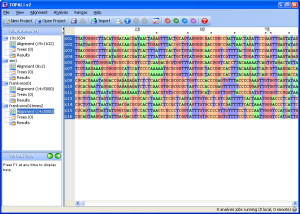
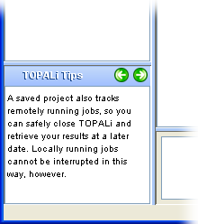

TOPALi v2 is an ongoing project, and as such the software is updated often. Below is a list of new or interesting features that have been added to the application.
New and improved graphical user interface
TOPALi v2 sports an entirely new graphical user interface that has been redesigned from scratch to improve upon the original TOPALi's interface. On Windows, the interface blends in with Office using the Office Look and Feel, while on Unix or Linux the popular JGoodies "Looks" is used.

Work with multiple, multiple alignments
A TOPALi project can now import and deal with as many DNA/Protein alignments as your PC has memory for. Each alignment in listed in a new "tree" view down the left-hand side of the screen, along with all the analysis results that relate to that dataset.
Monitor analysis jobs while working elsewhere
As your analysis jobs run (either locally or remotely) their status is continually tracked by TOPALi and displayed in the status bar. A coloured icon represents overal job status - green for OK, blue for communication errors, and red for critical job errors!
Integrated JavaHelp user manual
The user manual for TOPALi v2 is now integrated into the application in JavaHelp format, allowing you to easily move between help sections or to print areas of interest.

TOPALi Tips!
Each area of the TOPALi interface now comes with tips to help you work more effectivly with it, requiring less visits to the help system to learn to use the program.
